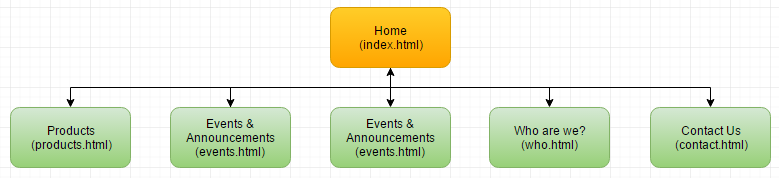

Name: Kipngetich Kemei
Login: jc428707
The goals of CossiePlay’s website is to not only increase the awareness of their shop and what they are doing but also in turn create more revenue for them. This will be done by promoting all the services that is offered from CossiePlay, spreading the word and getting more people involved in cosplay, also appealing to not only the middle age class but across all ages. On top of getting everyone to attend cosplay parties. Thus increasing the participants in the events held as well as increasing the overall revenue stream of CossiePlay.
To determine the success of the website it will be evaluated through its main factor of increasing revenue & awareness for CossiePlay. This will be done through 2 main platforms: selling costumes & organizing paid events. Through these 2 platforms to determine success would be to monitor the amount of costumes sold each week as compared to the amount sold before the website went live. Along with monitoring the amount of people attending the events hosted at CossiePlay and how much money is earned in comparison to before the website went live.
The intended target audience for CossiePlay’s website is not only aimed at the usual 35 – 50 year old customers but this website will also appeal to the younger audience of people in high school both male and female. As well as including the young adult age group. Thus increasing the age bracket from 35 – 50 to 15 – 50. The sites design will be based off of this but not going over the top and trying to appeal to all of the target audiences. The design will be visually appealing, not directed at a certain age group. There won’t be certain colours or designs aimed towards certain age groups or gender. It will be generally neutral colours and sometimes different colours that complement certain aspects of the websites design. By including these 2 different age brackets it will increase the customer numbers & thus increase their sales of products.
